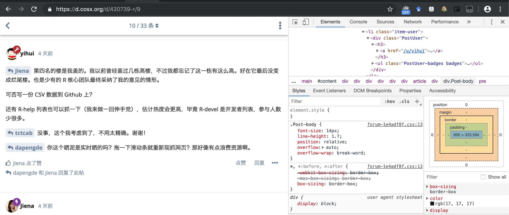

Chapter 15 R web scrape
Web scrape用
library(rvest)## Warning: package 'rvest' was built under R version 3.5.2## Loading required package: xml2lego_movie <- read_html("http://www.imdb.com/title/tt1490017/")
rating <- lego_movie %>%
html_nodes("strong span") %>% # 这个"strong span"是指什么意思？
html_text() %>%
as.numeric()
rating## [1] 7.8#> [1] 7.8上述的问题回答是由于：
knitr::include_graphics(rep("pic/scrape_2.png", 1))含有7.8的html元素就是strong 下面的span的元素。
根据这篇tutorial 提取class=""中的元素可以用如下代码
html_nodes('.pagination-page')学这段写一下：
a=read_html("https://d.cosx.org/d/420739-r")
html_nodes(a,".PostMention")## {xml_nodeset (27)}
## [1] <a href="https://d.cosx.org/d/420739/1" class="PostMention" data-id ...
## [2] <a href="https://d.cosx.org/d/420739/1" class="PostMention" data-id ...
## [3] <a href="https://d.cosx.org/d/420739/2" class="PostMention" data-id ...
## [4] <a href="https://d.cosx.org/d/420739/3" class="PostMention" data-id ...
## [5] <a href="https://d.cosx.org/d/420739/3" class="PostMention" data-id ...
## [6] <a href="https://d.cosx.org/d/420739/6" class="PostMention" data-id ...
## [7] <a href="https://d.cosx.org/d/420739/6" class="PostMention" data-id ...
## [8] <a href="https://d.cosx.org/d/420739/7" class="PostMention" data-id ...
## [9] <a href="https://d.cosx.org/d/420739/8" class="PostMention" data-id ...
## [10] <a href="https://d.cosx.org/d/420739/7" class="PostMention" data-id ...
## [11] <a href="https://d.cosx.org/d/420739/10" class="PostMention" data-i ...
## [12] <a href="https://d.cosx.org/d/420739/7" class="PostMention" data-id ...
## [13] <a href="https://d.cosx.org/d/420739/9" class="PostMention" data-id ...
## [14] <a href="https://d.cosx.org/d/420739/9" class="PostMention" data-id ...
## [15] <a href="https://d.cosx.org/d/420739/9" class="PostMention" data-id ...
## [16] <a href="https://d.cosx.org/d/420739/18" class="PostMention" data-i ...
## [17] <a href="https://d.cosx.org/d/420739/12" class="PostMention" data-i ...
## [18] <a href="https://d.cosx.org/d/420739/27" class="PostMention" data-i ...
## [19] <a href="https://d.cosx.org/d/420739/25" class="PostMention" data-i ...
## [20] <a href="https://d.cosx.org/d/420739/13" class="PostMention" data-i ...
## ...就得到分开的有PostMention类的元素
PostMentionUser=html_nodes(a,".PostMention")%>% html_text()
head(PostMentionUser)## [1] "yihui" "yihui" "tctcab" "yihui" "yihui" "Jiena"得到PostMention里面的元素，应该是回复中带@的部分？
html_nodes(a,".Post-body")%>%
html_text()->body
head(body)## [1] "\n 我现在已经不太参与邮件列表里的讨论了，不过我还是想看看里面最热门的讨论大概都是关于什么话题的。要是有人有兴趣，邮件列表的数据可以从网页上爬，比如 https://stat.ethz.ch/pipermail/r-devel/ 按 Thread 或 Subject 排列的页面爬一下就知道每个主题下面的回帖数量。最终我想要的数据就三列：主题、链接、回帖数量。如：\n\nsubject, link, count\n\"[R] Open a file which name contains a tilde\", \"https://stat.ethz.ch/pipermail/r-devel/2019-June/077961.html\", 18if(\"undefined\"!==typeof hljs)hljs._ha();else if(\"undefined\"===typeof hljsLoading){hljsLoading=1;var a=document.getElementsByTagName(\"head\")[0],e=document.createElement(\"link\");e.type=\"text/css\";e.rel=\"stylesheet\";e.href=\"//cdn.bootcss.com/highlight.js/9.12.0/styles/github.min.css\";a.appendChild(e);e=document.createElement(\"script\");e.type=\"text/javascript\";e.onload=function(){var d={},f=0;hljs._hb=function(b){b.removeAttribute(\"data-hljs\");var c=b.innerHTML;c in d?b.innerHTML=d[c]:(7<++f&&(d={},f=0),hljs.highlightBlock(b.firstChild),d[c]=b.innerHTML)};hljs._ha=function(){for(var b=document.querySelectorAll(\"pre[data-hljs]\"),c=b.length;0<c;)hljs._hb(b.item(--c))};hljs._ha()};e.async=!0;e.src=\"//uploads.cosx.org/static/hljs/highlight.pack.js\";a.appendChild(e)}上面是开发者列表，还有普通用户列表：https://stat.ethz.ch/pipermail/r-help/\n\n我之所以想看这个数据是因为我有个猜测想验证一下：凭我的肉眼观察，我感觉多数“热门”讨论都是极其琐碎无聊的事情，根本不值得费那么多口舌（比如上面那个例子）。为了防止我看歪了，我想看一眼全局数据。希望有壮士能写个脚本。其实第一次本地爬完之后，以后可以在 Travis 上定期爬新的数据，把数据自动更新到 Github 或什么地方。\n "
## [2] "\n yihui \n\n用xml2做了一个:Rmarkdown效果\n\n这种结构比较标准的html还是挺好处理的\n\n不过我只爬了一个月，仔细一看同一个thread在多个月里都会出现，要合并也可以，不过数据清理已经超出了这个爬虫的功能范围哈哈哈，暂时在此收手了。\n "
## [3] "\n yihui \n爬好了（从97年4月到目前的数据），戳这：https://github.com/jienagu/tidyverse_examples/blob/master/web_scraping_r_devel.R \n结果(已经排序好了)如下：\n> head(everything2)\n link Link_url count\n1 [Rd] [RFC] A case for freezing CRAN https://stat.ethz.ch/pipermail/r-devel/2014-March/068548.html 64\n2 [Rd] CRAN policies https://stat.ethz.ch/pipermail/r-devel/2012-March/063678.html 51\n3 [Rd] surprising behaviour of names<- https://stat.ethz.ch/pipermail/r-devel/2009-March/052522.html 49\n4 [Rd] legitimate use of ::: https://stat.ethz.ch/pipermail/r-devel/2013-August/067180.html 45\n5 [Rd] Computer algebra in R - would that be an idea?? https://stat.ethz.ch/pipermail/r-devel/2005-July/033940.html 40\n6 [Rd] if(--as-cran)? https://stat.ethz.ch/pipermail/r-devel/2012-September/064760.html 39if(\"undefined\"!==typeof hljs)hljs._ha();else if(\"undefined\"===typeof hljsLoading){hljsLoading=1;var a=document.getElementsByTagName(\"head\")[0],e=document.createElement(\"link\");e.type=\"text/css\";e.rel=\"stylesheet\";e.href=\"//cdn.bootcss.com/highlight.js/9.12.0/styles/github.min.css\";a.appendChild(e);e=document.createElement(\"script\");e.type=\"text/javascript\";e.onload=function(){var d={},f=0;hljs._hb=function(b){b.removeAttribute(\"data-hljs\");var c=b.innerHTML;c in d?b.innerHTML=d[c]:(7<++f&&(d={},f=0),hljs.highlightBlock(b.firstChild),d[c]=b.innerHTML)};hljs._ha=function(){for(var b=document.querySelectorAll(\"pre[data-hljs]\"),c=b.length;0<c;)hljs._hb(b.item(--c))};hljs._ha()};e.async=!0;e.src=\"//uploads.cosx.org/static/hljs/highlight.pack.js\";a.appendChild(e)}"
## [4] "\n tctcab 不错不错！好了，那就请别的壮士继续背这口锅吧，一是把历史数据爬完，二是在数据里加一列，就是帖子的时间（年月即可）。数据弄好后，如果有相邻月份的帖子标题相同，那就把前一个月的计数加到后一个月的计数上。\n "
## [5] "\n yihui \n年月并没有在xml里出现，不过那个thread的地址里有年月信息，要整合也不難，\n\n既然都做到这步了那就顺便走完吧，屁股没擦干净留给别人总不大好哈哈哈\n "
## [6] "\n yihui \n\n研究了一下合并帖子，觉得并不简单，因为：\n - 同一个串下面标题有可能不一致\n - 不同串有可能名字一样\n\n尝试了合并标题一样的帖子，但不一定对。比如04,06,07年都有个名为“[Rd] Wish list”的串\n\n另外就是抓取的时候一不留神就连接错误，所以我先把thread.html下载到本地再提取信息，速度也快了不少（8分钟到19秒）\n\n结果：\n\nRmarkdown效果\n\n合并串之后可以看出结果跟Jiena 的前十名还是有点细微差别：\n\n# A tibble: 10 x 4\n title link reps year_mon \n <chr> <chr> <int> <chr> \n 1 \"[Rd] [RFC] A case for freezi… https://stat.ethz.ch/pipermai… 69 2014-March\n 2 \"[Rd] Wish list\\n\" https://stat.ethz.ch/pipermai… 62 2007-Janu…\n 3 \"[Rd] CRAN policies\\n\" https://stat.ethz.ch/pipermai… 51 2012-March\n 4 \"[Rd] legitimate use of :::\\n\" https://stat.ethz.ch/pipermai… 48 2014-May \n 5 \"[Rd] NEWS.md support on CRAN… https://stat.ethz.ch/pipermai… 48 2015-May \n 6 \"[Rd] surprising behaviour of… https://stat.ethz.ch/pipermai… 48 2009-March\n 7 \"[Rd] declaring package depen… https://stat.ethz.ch/pipermai… 42 2013-Sept…\n 8 \"[Rd] if(--as-cran)?\\n\" https://stat.ethz.ch/pipermai… 42 2012-Sept…\n 9 \"[Rd] Bias in R's random inte… https://stat.ethz.ch/pipermai… 37 2018-Sept…\n10 \"[Rd] R 3.0, Rtools3.0,l Wind… https://stat.ethz.ch/pipermai… 36 2013-Aprilif(\"undefined\"!==typeof hljs)hljs._ha();else if(\"undefined\"===typeof hljsLoading){hljsLoading=1;var a=document.getElementsByTagName(\"head\")[0],e=document.createElement(\"link\");e.type=\"text/css\";e.rel=\"stylesheet\";e.href=\"//cdn.bootcss.com/highlight.js/9.12.0/styles/github.min.css\";a.appendChild(e);e=document.createElement(\"script\");e.type=\"text/javascript\";e.onload=function(){var d={},f=0;hljs._hb=function(b){b.removeAttribute(\"data-hljs\");var c=b.innerHTML;c in d?b.innerHTML=d[c]:(7<++f&&(d={},f=0),hljs.highlightBlock(b.firstChild),d[c]=b.innerHTML)};hljs._ha=function(){for(var b=document.querySelectorAll(\"pre[data-hljs]\"),c=b.length;0<c;)hljs._hb(b.item(--c))};hljs._ha()};e.async=!0;e.src=\"//uploads.cosx.org/static/hljs/highlight.pack.js\";a.appendChild(e)}"就得到回帖的内容，
html_nodes(a,".PostUser")## {xml_nodeset (0)}html_nodes(a,".username")## {xml_nodeset (0)}但是这个咋就不对。。。。奇怪。  是因为元素叠起来的缘故吗？应该不是奇奇怪怪的，明天再看。